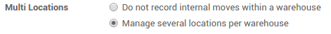
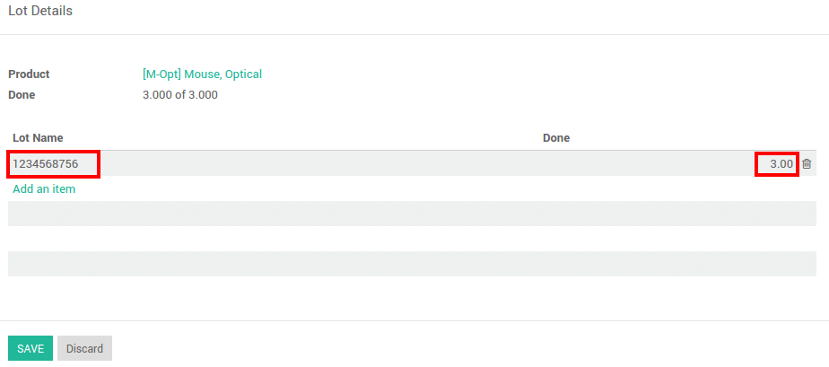
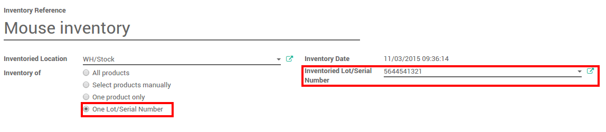

概述
在结构大批量的产品时候使用批次号很有用，批次号可以在报表中，质检过程，或者其余的信息中反映出来。批次号能定义一些产品有或者在同一生产环境中。在食品或者服装行业的批量生产中很有用。
YuanCloud有能力管理大多数行业施加规定可追溯性的要求
YuanCloud中的复式记账库存能让你进行非常高级的追踪。
设置
应用配置
在设置中需要激活批次追踪，在**库存**模块中，进入：[UNKNOWN NODE title_reference]，选择**跟踪批次或序列号码**。

为了能对批次进行高级管理，还要勾选**仓库进行多库位管理**。
点击 应用 。
操作类型配置
你还可以对每种操作类型设置如何管理批次。在 库存 应用中，进入菜单 。
对每种操作类型(收货，发货，内部调拨，……)，你可以设置是否创建新的批次号或者使用现有的批次号。

产品配置
最后，需要配置哪些产品你想进行批次追踪。
进入菜单 ，并点开所选择的产品。点击 编辑，并在 库存 页面勾选 批次追踪，然后点击 保存 。

管理批次
调拨
为了能够进行批次追踪处理发货单，你需要输入序列号()。
点击批次图标

一个窗口会弹出，点击**添加新条目**并输入批次号和数量。
基于操作类型的配置，你可能需要创建新的批次号或者现存批次号。
注解
在扫描枪界面，只需要扫描批次号。
库存调整
仓库中产品的批次追踪有2种方式：
根据产品盘点
一个批次的库存
在常规盘点时，有一个**序列号**栏位，如果产品已经有批次号，那么这个栏位就会预先显示产品的批次号。
如果产品还没有盘点过，点击**添加条目**。你可以容易的创建批次，只是需要在栏位中键入新的批次号。

你还可以对一个批次的产品进行盘点。在该场景中，你需要输入**批次号码**。你还可以在这里创建一个新的批次。只要键入一个号码，一个窗口就会弹出来和这个产品连接。
批次追踪
你可以查看批次追踪， 进入菜单

点击**追踪**按钮可以看到详细信息。